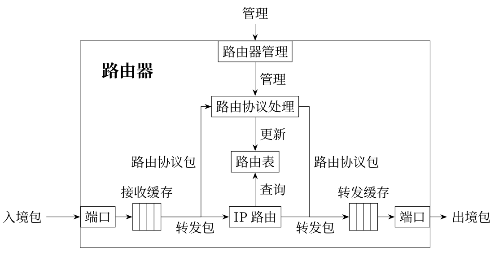

计算机网络实验室环境及设备简介
计算机网络实验室简介
计算机网络实验室以小组为单位，共有10个小组。每次实验中每组最多支持4人，每人一台计算机，共用一个实验机柜，机柜中有一台ATM管理机、两台路由器、一台三层交换机和两台二层交换机。桌子和实验机柜并排一列，实验机柜居中。

本实验室选择了华为技术有限公司（简称华为）生产的交换机和路由器为主要设备。如下图所示，每一个实验机柜的设备由上至下放置分别为ATM管理机、R1路由器、R2路由器、SW1三层交换机、SW2二层交换机、SW3二层交换机。
机柜：

学生计算机配备有双网卡，其中一个网卡与校园网相接，另一个网卡连接机柜。学生计算机通过Telnet远程到实验机柜中的ATM管理机连接到对应的设备上，结合在计算机和网络设备上的操作，进行实验。实验室网络拓扑图（Console线表示路由器或交换机的配置）：

实验设备网络拓扑图：

在实验机柜内部， ATM管理机与两台路由器和三台交换机的console端口相连接，计算机通过对Telnet进行重定向，使用3001～3005接口，可分别访问R1、R2、SW1、SW2、SW3。学生进行组网配置时，只需要Telnet到ATM的IP地址，修改实验设备对应ATM远程端口（如下表所示），就可登陆到对应的路由器或交换机上进行实验，而不需要对路由器和交换机的console端口频繁地进行插拔线操作，也不需要频繁地搬动设备进行连线。这样，在保证不影响实验效果的前提下，在最大程度上保证了昂贵的网络设备不被损坏，还使得实验组网既方便又高效。
机柜编号 |
ATM管理路由器的IP地址 |
|---|---|
1 |
10.251.130.241 |
2 |
10.251.130.242 |
3 |
10.251.130.243 |
4 |
10.251.130.244 |
5 |
10.251.130.245 |
6 |
10.251.130.246 |
7 |
10.251.130.247 |
8 |
10.251.130.248 |
9 |
10.251.130.249 |
10 |
10.251.130.250 |
设备名称 |
端口号 |
|---|---|
R1路由器 |
3001 |
R2路由器 |
3002 |
SW1三层交换机 |
3003 |
SW2二层交换机 |
3004 |
SW3二层交换机 |
3005 |
实验硬件设备简介（扩展阅读）
交换机
交换机（Switch）意为“开关”是一种用于电（光）信号转发的网络设备。它可以为接入交换机的任意两个网络节点提供独享的电信号通路。最常见的交换机是以太网交换机。其他常见的还有电话语音交换机、光纤交换机等。（来源百度百科）

本实验室配备有二层交换机和三层交换机。
二层交换机工作于OSI模型的第2层（数据链路层），故而称为二层交换机。二层交换机能够基于数据链路层的MAC首部信息，进行数据帧或VLAN（Virtual LAN）的传输工作。
三层交换机是一种在二层交换机的基础上增加了路由选择功能的网络硬件，它同时具有几乎二层交换的速度，也能够基于三层网络层的IP首部信息，实现路由选择以及分组过滤等功能。
二层交换机可以通过VLAN分割广播域，但终端之间的数据帧交换必须位于同一VLAN范围内。如果不同VLAN的终端要进行通信时，则需要采用路由功能，这就需要额外添加路由器。但使用三层交换机则无需其他硬件设备，就能够完成VLAN配置和VLAN之间的通信过程。
提示
三层交换机最重要的目的是加快大型局域网内部的数据交换，其路由功能也多是围绕这一目的而展开的，所以它的路由功能没有同一档次的专业路由器强，不能完全替代路由器。在企业网和教学网中，一般将三层交换机用在网络的核心层，以连接不同的子网或VLAN。
路由器
路由器是工作在OSI参考模型第三层（网络层）的网络连接设备，它的基本功能是根据数据包的IP地址选择发送路径，转发数据包到相应网络。
路由器的数据转发时基于路由表实现的，每个路由器都会维护一张路由器，根据路由表决定数据包的转发路径。
当路由器接收到一个数据包后，首先对数据包进行校验，如果是发给路由器用于协议处理的数据包，路由器将交给相应模块去处理，而大多数是需要转发的数据包，路由器将查询路由表，然后根据查询结果转发数据包到相应的端口和网络。路由表由多个路由表表项构成，可以由管理者手动设置（即静态路由），也可以根据路由协议自动生成（即动态路由）。
提示
在构建大型的LAN时，需要使用交换机或主机等设备来管理大量的MAC地址信息。当频繁进行广播通信时，设备的负担就会非常大。为减轻设备的负担，需要将LAN划分成一个个子网，而子网间的通信就需要依靠路由器进行了。另外，为了连接互联网，与互联网服务供应商建立连接时，也同样需要用到路由器设备。
交换机和路由器的接口
本实验室主要网络设备均是华为公司的 Quidway S系列交换机和路由器。
实验中用到的二层交换机/三层交换机接口类型较少，主要两种类型的接口，分别是24/48个以太网端口（二层交换机是24个，三层交换机是48个）和一个配置口（Console 口）。以太网端口表示为G0/0/1～G0/0/24（G0/0/48），其中G为千兆以太网GigabitEthernet的缩写，后面数字采用三段式表示，左边第一个数字“0”表示该端口所在模块对应的槽位编号，第二个数字“0”表示子卡号，第三个数字表示该端口在这个模块上的编号，一般从 1 开始。
二层交换机：

三层交换机：

下图是实验用到的路由器，其接口类型相对比较丰富，它有13个固定接口和2个扩展插槽。其中，固定接口在下面一排，从左向右分别是2个光模块接口，1个配置口（RJ45 Console 口和mini-USB类型的Console）、 2个WAN（GE8、GE9）、8个以太网接口（G0/0/0～G0/0/7），上一排是两个SIC扩展插槽，可以插多种接口模块，例如以太网接口模块、IP电话模块、ATM板卡（异步WAN接口卡）等。路由器接口表示规则与交换机类似，也采用三段式表示，不同的是，接口在模块上的编号一般从 0 开始，也就是第三个数字一般从 0 开始编号。
路由器：

网络设备的命令行介绍
命令行视图
华为Quidway 系列交换机和路由器向用户提供一系列配置命令以及命令行接口，方便用户对它们进行配置和管理。Quidway系列路由和交换设备的命令行采用分级保护方式，防止未授权用户的非法侵入。命令行划分为用户模式、视图模式和局部配置模式3个模式，不同级别的用户分别赋予了不同的权限，对应不同的命令行。具体规定如下：
（1） 用户模式
登陆设备后，直接进入用户模式，只能执行少量查看配置的命令；例如查看设备信息：display version，显示当前配置：display current-configuration.
1<Quidway>
（2） 视图模式
用户模式下，输入system-view进入视图模式，可执行设备全局配置的命令。
1<Quidway>system-view
2Enter system view, return user view with Ctrl+Z.
3[Quidway]
（3） 局部配置模式
视图模式下，输入局部配置命令，如interface g0/0/1，进入G0/0/1端口配置模式。
1[Quidway]int g0/0/1
2[Quidway-GigabitEthernet0/0/1]
此外局部配置模式有很多种，可根据不同需求进入vlan配置模式、端口聚合配置模式等，可输入？，查看当前模式下，能执行哪些命令。
常用配置命令
1 <Quidway>system-view // 由用户视图进入系统系统
2 [Quidway]ping //测试网络连通性
3 [Quidway]reboot //重启交换机/路由器
4
5 [Quidway]display interface //查看路由器的接口状态
6 [Quidway]display ip interface //查看接口与IP相关的信息
7 [Quidway]display ip interface brief //查看接口状态
8 [Quidway]display ip routing-table //查看路由表
9 [Quidway]display vlan //查看vlan信息
10 [Quidway]display port vlan //查看端口vlan信息
11 [Quidway]display current-configuration //查看运行的配置文件
12 [Quidway]display interface Gigabitethernet 0/1 //显示以太网端口g0/0/1 的信息
13
14 [Quidway]interface Gigabitethernet 0/0/1 //进入以太网端口g0/0/1视图
15 [Quidway-Gigabitethernet0/0/1]shutdown //关闭以太网端口
16 [Quidway-Gigabitethernet0/0/1]undo shutdown //打开以太网端口
17
18 [Quidway-Gigabitethernet0/0/1]port link-type access //设置端口为 Access 端口
19 [Quidway-Gigabitethernet0/0/1]port link-type hybrid //设置端口为 Hybrid 端口
20 [Quidway-Gigabitethernet0/0/1]port link-type trunk //设置端口为 Trunk 端口
21 [Quidway-Gigabitethernet0/0/1]undo port link-type //恢复端口的链路类型为缺省的 Access 端口
22
23 [Quidway-Gigabitethernet0/0/1]quit //从端口视图退出到系统视图
24 [Quidway]quit //从系统视图退出到用户视图
25 <Quidway>
配置命令的一些技巧
路由器和交换机都支持命令的简写，只要所输入的字符足以识别是某一条命令就可以。例如display current-configuration 命令可以简写为 dis cur。
如果忘记某条命令的写法，可以键入“?”可以获取该视图下所有的命令及简单描述。
键入一命令，后接以空格分隔的“?”，若该位置存在关键字，则列出全部可选的关键字及其简单描述。
键入一字符串，其后紧接“?”，则列出以该字符串开头的所有命令。
键入一命令，后接一紧接“?”的字符串，则列出以该字符串开头的所有关键字。